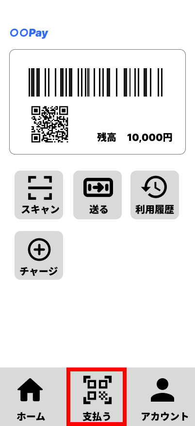
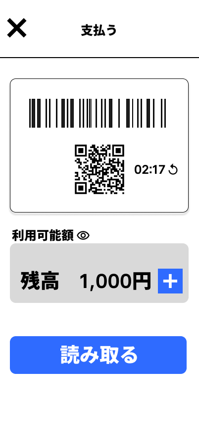
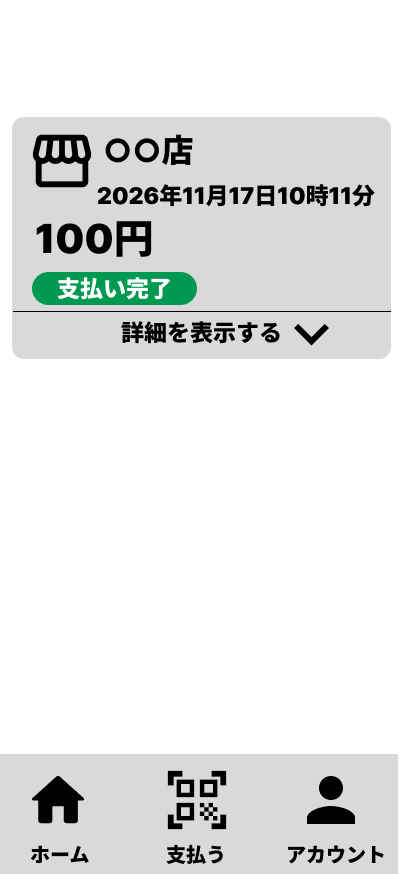
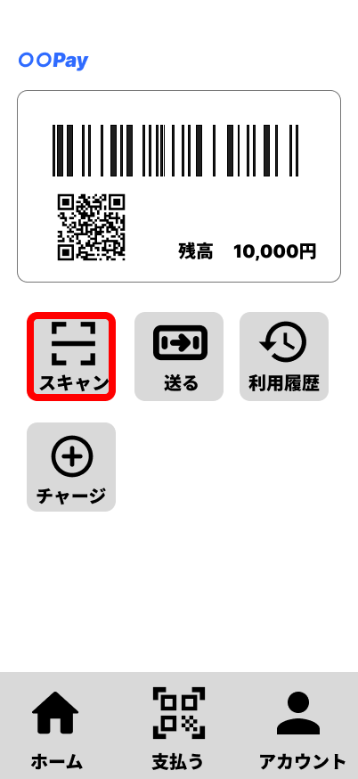
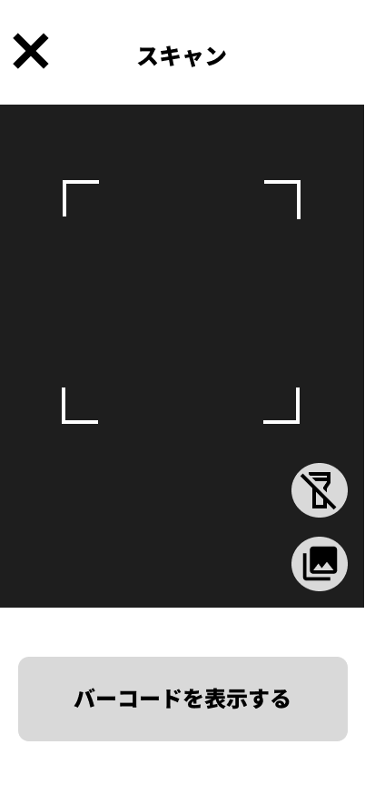
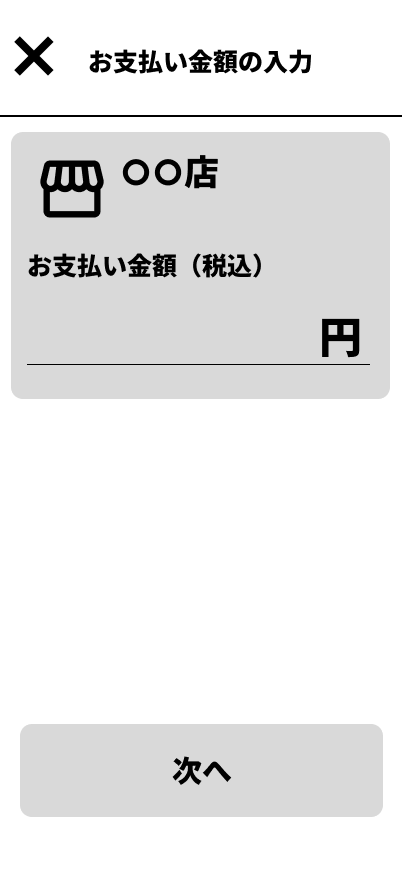
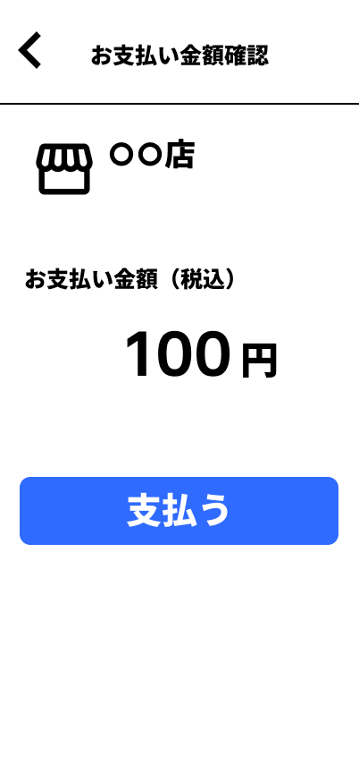
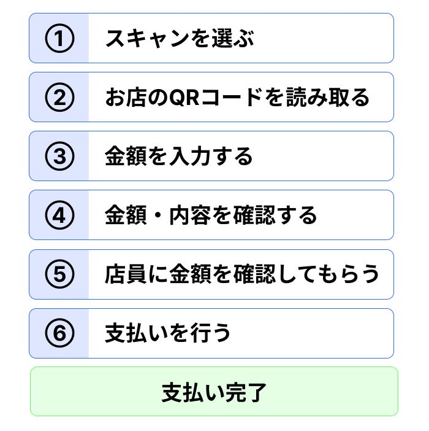

5. 店舗で支払う
スマホ決済では、お店で商品やサービスの代金を支払うことができます。
この教材では、店舗で利用できる2つの支払い方法について説明します。
5.1 自分の支払い用コードを見せる
1つ目は、自分のスマートフォンに支払い用のバーコード・QRコードを表示して支払う方法です。
この教材の架空アプリでは、ホーム画面から「支払う」を選びます。

「支払う」を選ぶと、自分のスマートフォンに支払い用のバーコード・QRコードが表示されます。

表示されたバーコード・QRコードを店員に見せ、店舗側で読み取ってもらいます。
支払い用のバーコード・QRコードには有効期限があります。有効期限を過ぎたコードは、そのまま支払いに利用することはできません。支払いを行うときは、有効期限内のコードを使用します。
コードの読み取りが行われ、支払いの処理が終わると、支払い後の画面が表示されます。

支払いが完了すると、支払った金額の分だけスマホ決済アプリの残高が少なくなります。
5.2 お店のQRコードを読み取る
もう1つは、お店に表示されているQRコードを使って支払う方法です。
この教材の架空アプリでは、ホーム画面から「スキャン」を選びます。

「スキャン」を選ぶと、QRコードを読み取るための画面が表示されます。

この画面で、お店に表示されているQRコードを読み取ります。
QRコードを読み取ると、そのお店への支払い金額を入力する画面へ進みます。

支払う金額を入力して「次へ」を選びます。

入力した金額や店舗名を確認し、画面を店員に見せて、支払う金額を確認してもらいます。
金額に問題がなければ、「支払う」を選びます。
支払いが完了したことを店員と確認します。
お店のQRコードを読み取って支払う操作の流れは、次のとおりです。

この方法でも、支払いが完了すると、支払った金額の分だけスマホ決済アプリの残高が少なくなります。
また、どちらの方法で支払った場合でも、支払った内容はあとから利用履歴で確認できます。
残高が支払いに必要な金額より少ない場合には、必要に応じて先に残高を増やしてから支払いを行います。
ポイント
店舗でスマホ決済を利用するときは、画面に表示される内容を確認しながら、支払いの操作を進めます。